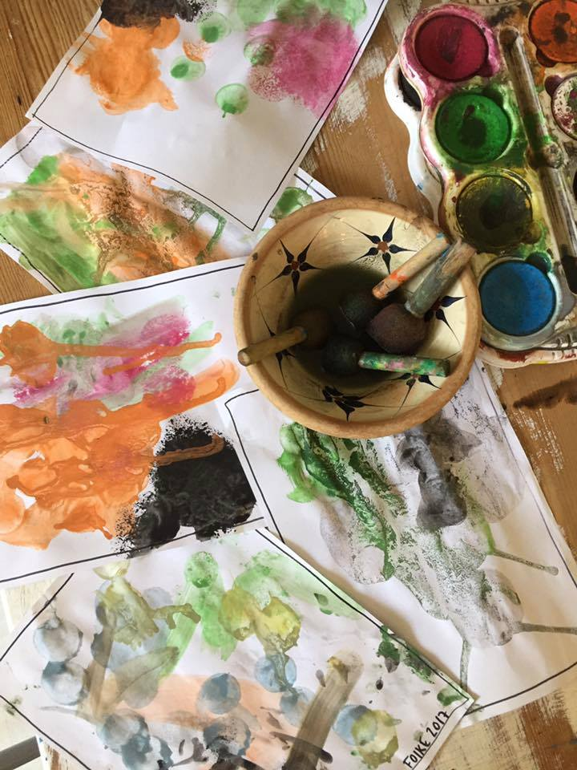
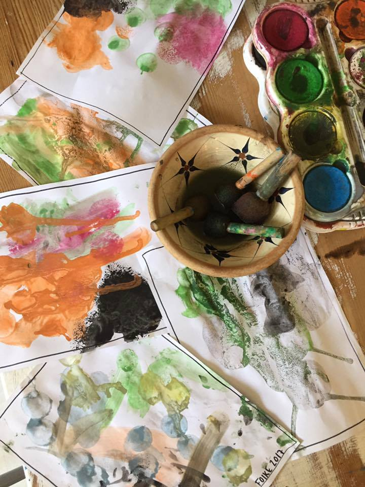

Traditioner
I kong Gulerod elsker vi at hygge os. Vi fejrer de traditionelle højtider og skaber derudover vores egne traditioner, som er med til at danne rammen om Kong Gulerods kultur.
Årstiderne
Vi er ude i alt slags vejr. Mærker regnen, vinden, kulden og solen på vores kinder. Vi besøger forskellige legepladser i nærområdet, grøndalsparken, degnemosen og naturlegeplads ved Bellahøj. Vi samler blade, kastanjer og blomster. Vi bevæger os på kuperet terræn og mærker det kilder i maven når vi gynger og rutsjer. Vi mærker sne, mudder, græs og sand og er vi heldige, får vi lov til gå på æblerov i en nærliggende have. .
Fødselsdag
Vi fejre børnenes fødselsdage med flag og fødselsdagssang. Forældrene er velkomne til at medbring lidt lækkerier barnet kan dele ud. (Helst med et begrænset sukkerindhold).

Fastelavn
Vi holder fastelavn på børnenes præmisser. Det vil sige at man kan komme udklædt, hvis man synes det er sjovt. Vi voksne er ikke udklædt, men fremstår som de troværdige og de trygge voksne børnene kender. Vi synger fastelavnssange og maler paptønden. Tønden fyldes med rosiner og eftermiddagen slutter med hjemmelavede fastelavnsboller.

Decemberhygge
Vi pynter huset med lys, gran og nisser. Vi kalder på nissen og er vi heldige dukker den frem fra skabet, med pebernødder eller andet godt. Vi laver julegaver, nogle børn laver 5 andre 1. Vi har fokus på processen og ikke produktet og lader det igen være på børnenes præmisser og lægger vægt på at gaverne er skabt med glæde.
Påske
Vi laver påskepynt og sår karse. I slutningen af ugen holder vi påskefrokost med bl.a. æggemadder og karse.
Forældrekaffe
Fra april til oktober holder vi forældrekaffe sidste fredag i hver måned. Fra oktober til april holder vi forældrekaffe sidste fredag hver anden måned. Det afholdes i den sidste time inden vi lukker og giver forældrene mulighed for at tale sammen.
Kunstprojekt
Fra april starter vi et kunstprojekt op. Vi eksperimenterer med og på forskellige materialer. Vi støtter, inspirere og motivere, men det er et frivilligt projekt og deltagelsen er således på børnenes præmisser. Forløbet resultere i en fernisering, hvor børnenes værker præsenteres. Værker får i med hjem.
 

Sommerafslutning
Forældrene møder os på legepladsen til kaffe og forældrenes hjemmebagte kag. Inden vi siger farvel ønsker vi hinanden en rigtig dejlig sommerferie.